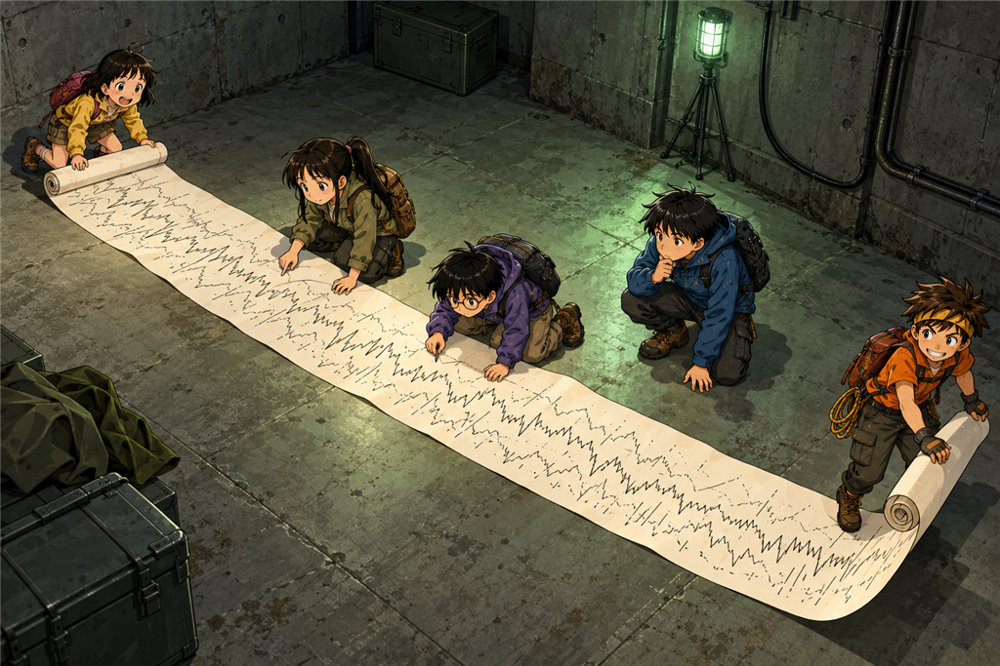
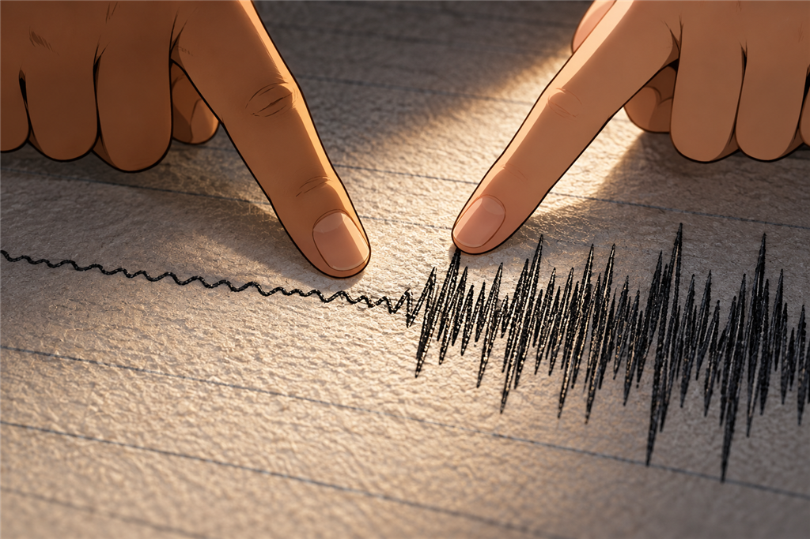
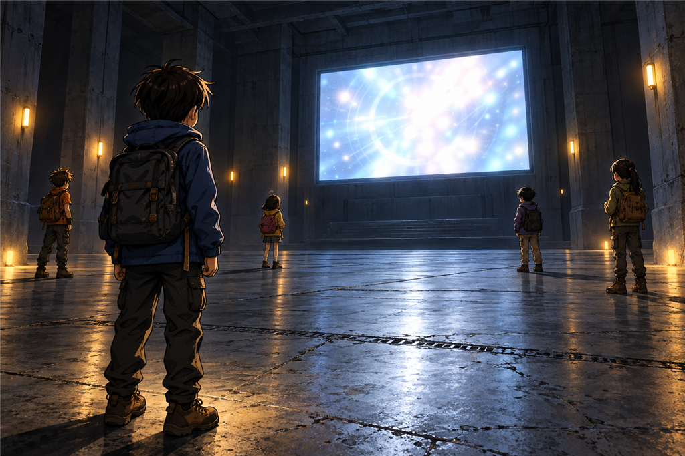

ข้อความจากเมื่อสามวันก่อน
เวลาอ่านประมาณ 11 นาที · Data Logging / Timestamp
โต๊ะเหล็กยาวที่ชิดผนังด้านซ้ายมีฝุ่นจับหนาจนเห็นรอยนิ้วมือของตัวเองได้ทันทีที่แตะ
บนโต๊ะมีเครื่องอยู่เครื่องหนึ่ง ขนาดประมาณกล่องรองเท้าสองกล่องต่อกัน มีลูกกลิ้งโลหะ มีแขนเล็ก ๆ สามแขนยื่นออกมา และที่ปลายแขนแต่ละอันมีปากกาเส้นเล็กเสียบอยู่
ปากกาทั้งสามด้ามแห้งสนิท
“มันเขียนอะไรของมัน” ต้นกล้าถาม
“เขียนลงอันนี้” มีนาตอบ
ใต้โต๊ะมีกระดาษกองหนึ่ง เป็นกระดาษยาวพับทบไปทบมาเป็นชั้น ๆ เหมือนพัดที่คลี่ไม่สุด สูงเกือบถึงเข่าของฟ้า
ปั้นดึงชั้นบนสุดออกมาแผ่บนพื้น
บนกระดาษมีเส้นหมึกวิ่งยาวไปตลอดแผ่น ขยุกขยิกขึ้นลงเล็ก ๆ ตลอดเวลาเหมือนคลื่นที่ไม่เคยหยุดนิ่ง
“นี่คืออะไรคะ” ฟ้าถาม
“เครื่องมันจดสิ่งที่มันวัดได้ลงกระดาษ” นนท์ตอบ “จดไปเรื่อย ๆ ทุกวินาที ไม่ว่าจะมีคนอยู่หรือไม่มี”
ต้นกล้าเงยหน้ามองห้องมืด ๆ รอบตัว
“แปลว่ามันจดมาตลอดเลยเหรอ ไม่มีใครอยู่เลยสักคน”
“ใช่”
1
พวกเขาช่วยกันคลี่กระดาษออกบนพื้นห้อง
มันยาวกว่าที่คิดมาก คลี่ไปได้สิบกว่าชั้นก็เต็มความกว้างห้องแล้ว ต้นกล้ากับฟ้าต้องเดินถอยหลังพร้อมกันคนละมุม
“ระวังอย่าเหยียบ” มีนาเตือน “ถ้าขาดแล้วเราต่อไม่ได้”
เส้นหมึกบนกระดาษไม่ได้เหมือนกันหมด บางช่วงขยุกขยิกถี่เล็ก ๆ บางช่วงเรียบขึ้น บางช่วงมีฟันแหลม ๆ โผล่ขึ้นมาสูงกว่าปกติ
ปั้นคลานไปตามแนวกระดาษอย่างช้า ๆ
“มีตัวเลขด้วย” เขาพูด
ริมขอบกระดาษมีขีดเล็ก ๆ พิมพ์ไว้เป็นระยะเท่า ๆ กัน และทุก ๆ สิบขีดจะมีตัวเลขกำกับหนึ่งตัว
“ขีดพวกนี้คือเวลา” นนท์พูด “กระดาษมันเลื่อนออกมาเรื่อย ๆ ด้วยความเร็วคงที่ เพราะงั้นระยะบนกระดาษก็เท่ากับเวลา”
ฟ้าเงยหน้าขึ้นทันที “เหมือนมาตราส่วนของแผนที่เลยค่ะ”
ปั้นหยุดมือ แล้วหันมามองเธอ
“…ใช่เลย” เขาพูด “แผนที่ย่อระยะทาง อันนี้ย่อเวลา”
ต้นกล้ายืนกอดอกอยู่ริมกระดาษ “โอเค แล้วเราจะอ่านของยาวขนาดนี้ยังไง เริ่มจากหัวเหรอ”
“ไม่” นนท์ตอบ “ของยาว ๆ แบบนี้ อย่าอ่านตั้งแต่ต้น ให้ดูปลายทั้งสองข้างก่อน แล้วค่อยหาจุดที่มันเปลี่ยน”
2
ปลายด้านหนึ่งของกระดาษคือจุดที่เส้นหมึกหยุด
มันไม่ได้ค่อย ๆ จางหาย มันหยุดกลางคัน เส้นลากมาปกติแล้วตัดจบดื้อ ๆ ตรงนั้น
“หมึกหมด” มีนาเดา
“หรือกระดาษหยุดเลื่อน” ปั้นเสริม
พวกเขาเดินไปอีกปลายหนึ่ง ซึ่งอยู่ลึกเข้าไปในกองที่ยังพับอยู่
ตรงนั้นเส้นหมึกก็เริ่มต้นแบบกะทันหันเหมือนกัน ก่อนหน้านั้นคือกระดาษเปล่าสนิท ไม่มีเส้นเลยแม้แต่นิดเดียว
“แปลว่าเครื่องมันเพิ่งเริ่มเขียน” ต้นกล้าพูด “ไม่ได้เขียนมาตลอดอย่างที่เราคิด”
“แล้วเริ่มตอนไหน” ฟ้าถาม
ปั้นเริ่มนับขีดจากจุดที่เส้นเริ่มต้น ไปจนถึงจุดที่เส้นหยุด
เขานับสองรอบ แล้วจดลงสมุด
“ถ้าหนึ่งขีดคือหนึ่งชั่วโมงตามที่พิมพ์ไว้ตรงหัวกระดาษ” เขาเงยหน้าขึ้น “เส้นทั้งหมดนี้ยาวประมาณหกวัน”
ห้องเงียบไปครู่หนึ่ง
“หกวัน” นนท์ทวน
“เราอยู่ในป่ามาสามวัน” มีนาพูดช้า ๆ
“แปลว่าเครื่องนี้เริ่มทำงานก่อนที่เราจะมาถึงสามวัน”

หกวันของพื้นดิน ย่อลงมาเป็นเส้นหมึกเส้นเดียว
3
ต้นกล้าเป็นคนตั้งคำถามที่ดีที่สุดในตอนนี้ โดยที่เขาไม่รู้ตัว
“แล้วเราจะรู้ได้ไงว่านาฬิกาของมันตรง”
ปั้นหยุดปากกาค้างกลางอากาศ
“…จริงด้วย”
“เครื่องเก่าขนาดนี้ ถ้านาฬิกามันเพี้ยนไปสองวันล่ะ” ต้นกล้าพูดต่อ “เราก็นับผิดหมดเลยสิ”
มีนาพยักหน้า “แล้วเราก็ไม่มีทางรู้ด้วย เพราะเราไม่มีอะไรไปเทียบกับมัน”
“มีสิ” นนท์ตอบ
ทุกคนหันมา
“เรามีเรื่องหนึ่งที่เรารู้แน่ ๆ ว่าเกิดขึ้นเมื่อไร”
🧠 หยุดคิดสักครู่
เครื่องบันทึกบอกว่ามันเริ่มทำงานเมื่อหกวันก่อน แต่ไม่มีใครรู้ว่านาฬิกาของเครื่องตรงหรือเปล่า
ถ้าเป็นเรา จะทำยังไง?
A. เชื่อตามที่เครื่องบอก เพราะเครื่องไม่โกหก
B. ไม่ต้องสนใจวันที่ เอาแค่ลำดับก่อนหลังก็พอ
C. หาเหตุการณ์ที่เรารู้วันเวลาแน่ ๆ ด้วยตัวเอง แล้วดูว่าเครื่องบันทึกมันไว้ตรงไหน
เลือกไว้ในใจก่อน แล้วค่อยอ่านต่อนะ
4
“ฝน” มีนาพูดขึ้นก่อนใคร
“ฝนวันที่เราหลง” นนท์ตอบ “ตกหนักมาก น้ำป่ามาเต็มลำธาร ดินอุ้มน้ำทั้งภูเขา ถ้าเครื่องนี้วัดพื้นดินจริง มันต้องเห็น”
ปั้นคลานกลับไปที่กระดาษทันที
เขาไล่สายตาไปตามเส้นหมึกอย่างช้า ๆ ผ่านช่วงที่ขยุกขยิกเรียบ ๆ ไปเรื่อย ๆ จนถึงช่วงหนึ่ง
แล้วเขาก็หยุด
ตรงนั้นเส้นหมึกเปลี่ยนไปอย่างเห็นได้ชัด จากคลื่นเล็ก ๆ กลายเป็นฟันแหลมสูงถี่ ๆ ติดกันเป็นแถบยาว เหมือนใครเอาเลื่อยมาวาดทับ
“ตรงนี้” เขาพูด เสียงเบาลงโดยไม่ได้ตั้งใจ
ฟ้าคลานเข้ามาดูใกล้ ๆ “นี่คือฝนเหรอคะ”
“นี่คือภูเขาตอนฝนตก” มีนาตอบ

ฝนวันที่พวกเขาหลง หน้าตาเป็นอย่างนี้บนกระดาษ
ปั้นนับขีดจากแถบฟันเลื่อยนั้นไปจนถึงปลายกระดาษที่เส้นหยุด
เขานับสองรอบ ตรวจอีกรอบ
“ประมาณสองวันครึ่ง”
ทุกคนเงียบ คิดตามพร้อมกัน
ฝนตกตอนบ่ายวันแรก แล้วตอนนี้คือสายของวันที่สาม
สองวันครึ่งพอดี
“นาฬิกาของมันตรง” นนท์พูด
“ตรงเป๊ะเลย” ปั้นเสริม
แล้วเขาก็เลื่อนนิ้วย้อนกลับไปอีกทาง จากแถบฟันเลื่อยไปทางจุดเริ่มต้นของเส้น
นับขีด
“สามวัน” เขาพูด “เครื่องนี้เริ่มเขียนก่อนฝนตกสามวัน”
ต้นกล้ายืนนิ่ง “แปลว่ามีคนมาเปิดมัน”
“เครื่องไม่เปิดตัวเองหรอก” มีนาตอบ
5
กระดาษบอกได้แค่ว่ามีอะไรเกิดขึ้น แต่ไม่ได้บอกว่าใครทำ
“เส้นหมึกมันบอกได้แค่ว่าพื้นดินสั่นยังไง” ปั้นพูดขณะพับกระดาษเก็บคืนทีละชั้น “มันไม่รู้จักคน”
“แล้วอะไรรู้จักคนล่ะ” ฟ้าถาม
ปั้นหยุดมือ แล้วหันไปมองทางประตูที่พวกเขาเพิ่งเข็นกล่องออกมาเมื่อเช้า
“ของที่คนต้องกดมันด้วยตัวเอง”
สิ่งที่จะบอกได้อยู่ในห้องโถงด้านนอก
พวกเขาเดินกลับออกไปแล้วยืนหน้าจอดำอีกครั้ง คราวนี้ไม่มีใครต้องเดาว่าต้องทำยังไง
“แยกกัน” นนท์พูดสั้น ๆ
ทุกคนแยกย้ายไปยืนคนละมุมโดยไม่ต้องสั่งซ้ำ ปั้นไปตรงกล่องสีเทา มีนาไปตรงผนังสายไฟ ต้นกล้าไปมุมไกล ฟ้ายืนตรงทางขึ้นบันได ส่วนนนท์ยืนหน้าประตูสามบาน
ห้าคน ห้าที่
กึก… ครืนนนน…
ไฟบนผนังสว่างขึ้นทีละดวง แล้วจอก็ติด
“เมื่อสามวันก่อนเราเดาวิธีนี้ไม่ออกเลยด้วยซ้ำ” มีนาพูดจากมุมของเธอ
บนจอมีรายการบรรทัดยาวเรียงลงมา แต่ละบรรทัดขึ้นต้นด้วยวันและเวลา
ส่วนใหญ่หน้าตาเหมือนกันหมด เป็นตัวเลขกับตัวย่อที่ไม่มีใครอ่านออก และเกิดขึ้นทุกสิบเอ็ดวินาทีเป๊ะ ๆ ไล่ลงมาไม่มีหยุด
“พวกนี้คือเครื่องมันจดของมันเอง” ปั้นพูด “ไม่ต้องสนใจ”
“แล้วจะดูตรงไหน” ต้นกล้าถาม
“ดูบรรทัดที่ไม่เหมือนชาวบ้าน”
เขาไล่สายตาลงไปเรื่อย ๆ จนถึงกลุ่มบรรทัดที่อยู่บนสุด กลุ่มที่เก่าที่สุดของทั้งหมด
ตรงนั้นมีบรรทัดอยู่ไม่กี่บรรทัดที่หน้าตาต่างออกไปชัดเจน มันยาวกว่า มีตัวหนังสือมากกว่า และไม่ได้ห่างกันสิบเอ็ดวินาที มันห่างกันเป็นนาที บางบรรทัดห่างกันหลายนาที
“อันนี้แหละ” ปั้นพูด
“แล้วมันแปลว่าอะไรล่ะ” ต้นกล้าถาม
“ยังไม่รู้ แต่ดูเวลาสิ” ปั้นชี้ “ห่างกันไม่เท่ากันเลย เดี๋ยวสองนาที เดี๋ยวเจ็ดนาที เดี๋ยวนาทีเดียว”
มีนาเข้าใจก่อนคนอื่น
“เครื่องทำงานตรงเวลาเสมอ” เธอพูด “ของที่ไม่ตรงเวลา…คือคน”
6
บรรทัดสุดท้ายของกลุ่มนั้นยาวกว่าบรรทัดอื่นทั้งหมด
ตรงท้ายบรรทัด ในเครื่องหมายคำพูด มีข้อความที่ทุกคนอ่านออกทันทีโดยไม่ต้องให้ใครแปล
ในที่สุด...พวกเธอก็มาถึง
ไม่มีใครพูดอะไรเลยสักคน
ต้นกล้าเป็นคนแรกที่เปล่งเสียงออกมาได้ และเสียงเขาแห้งผิดปกติ
“มันไม่ได้คิดเองเหรอ”
“ไม่” นนท์ตอบ
“มีคนพิมพ์ใส่มันไว้”
“ใช่”
ต้นกล้านั่งลงกับพื้นตรงนั้นเลย
“ตั้งแต่คืนแรกที่เราเจอเสานั่น เราคิดมาตลอดว่ามันรู้จักเรา” เขาพูด “ว่ามันรอเราอยู่”
“มันไม่ได้รอเรา” ปั้นตอบ
“เรารู้แล้ว”
มีนามองเขาจากอีกมุมห้อง “แต่คนที่พิมพ์ไว้ก็รอใครสักคนอยู่จริง ๆ นะ”
ต้นกล้าเงยหน้าขึ้น
“เขาไม่รู้หรอกว่าจะเป็นใคร” เธอพูดต่อ “เขาแค่พิมพ์ทิ้งไว้เผื่อมีคนมาถึง แล้วคนที่มาถึงก็คือเรา”
ฟ้ามองจอนั้นด้วยสายตาคนละแบบกับเมื่อสามวันก่อน “เขาพิมพ์ไว้ตอนไหนคะ”
ปั้นอ่านวันที่ต้นบรรทัด แล้วเทียบกับที่จดไว้ในสมุด
“วันเดียวกับที่กระดาษเริ่มเขียน” เขาตอบ “ชั่วโมงเดียวกันด้วย”
มีนายืนอยู่ตรงผนังสายไฟ มือเธอยังแตะสายเส้นที่สะอาดกว่าเส้นอื่นอยู่
“สามวันก่อนที่เราจะหลงเข้ามา” เธอพูด “มีคนยืนอยู่ตรงนี้ เปิดเครื่องทุกเครื่อง เดินสายไฟเส้นนี้ แล้วพิมพ์ประโยคนั้นทิ้งไว้”
“ทิ้งไว้ให้ใคร” ต้นกล้าถาม
ไม่มีใครตอบ
“แล้วเขาไปไหนคะ” ฟ้าถามต่อ
ยังไม่มีใครตอบอยู่ดี
ปั้นไม่ได้มองจอแล้ว เขากำลังไล่สายตาลงไปตามบรรทัดที่เหลือ ทีละสิบเอ็ดวินาที ทีละสิบเอ็ดวินาที ลงไปเรื่อย ๆ จนเกือบถึงบรรทัดล่างสุด
แล้วเขาก็หยุด
“นนท์”
“ว่า”
“มีอีกบรรทัดหนึ่งที่ไม่เหมือนชาวบ้าน”
นนท์เดินมาจากหน้าประตู ไฟดวงหนึ่งบนผนังดับลงเพราะเขาออกจากมุมของตัวเอง แต่ตอนนี้ไม่มีใครสนใจแล้ว
ปั้นชี้บรรทัดนั้นให้ดู มันไม่ได้อยู่ในกลุ่มบนสุด มันอยู่ลึกลงมามาก อยู่ตรงกลางของรายการทั้งหมด ถูกล้อมด้วยบรรทัดสิบเอ็ดวินาทีที่เหมือนกันหมดทั้งข้างบนและข้างล่าง
บรรทัดเดียว
ไม่ตรงจังหวะ
ปั้นอ่านวันเวลาที่ต้นบรรทัด แล้วเงยหน้าขึ้นมองทุกคน
“สองคืนก่อน” เขาพูด “ตอนนั้นเรานอนอยู่บนเนินข้างนอกกันทั้งห้าคน”

คราวนี้ไม่ต้องรอให้มันพูด พวกเขารู้แล้วว่าต้องยืนตรงไหน
🔬 วิทยาศาสตร์ในตอนนี้
เครื่องมือวัดหลายอย่างจดสิ่งที่มันเจอไว้ตลอดเวลา โดยไม่สนใจว่ามีคนดูอยู่หรือไม่ บันทึกแบบนี้มีประโยชน์ตรงที่มันไม่ลืมและไม่เข้าข้างใคร เราจึงย้อนกลับไปดูได้ว่าเกิดอะไรขึ้นตอนที่ไม่มีใครอยู่
ระยะบนกระดาษบันทึกคือเวลา เพราะกระดาษเลื่อนด้วยความเร็วคงที่ หลักการเดียวกับมาตราส่วนบนแผนที่ แค่แผนที่ย่อระยะทาง ส่วนกระดาษนี้ย่อเวลา
อย่าเชื่อนาฬิกาของเครื่องโดยไม่ตรวจ วิธีตรวจคือหาเหตุการณ์ที่เรารู้เวลาแน่ ๆ ด้วยตัวเอง แล้วดูว่าเครื่องบันทึกมันไว้ตรงไหน ถ้าตรงกัน เราก็เชื่อส่วนที่เหลือได้มากขึ้น
ของยาว ๆ อย่าอ่านตั้งแต่ต้น ให้ดูปลายทั้งสองข้างก่อน แล้วมองหาจุดที่รูปแบบเปลี่ยน เพราะข้อมูลที่น่าสนใจมักไม่ได้อยู่ในส่วนที่เหมือนกันหมด แต่อยู่ตรงที่มันผิดจากเดิม
จบตอนที่ 11
ช่วยให้ทีม ZERO เดินทางต่อ ☕
ถ้าตอนนี้ทำให้คุณสนุก สนับสนุนค่าเวลาเขียนและภาพประกอบได้ตามสะดวกครับ
สนับสนุนทีม ZERO